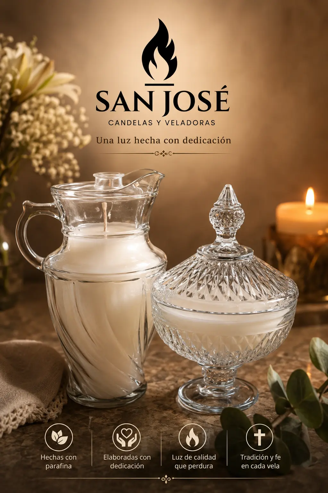
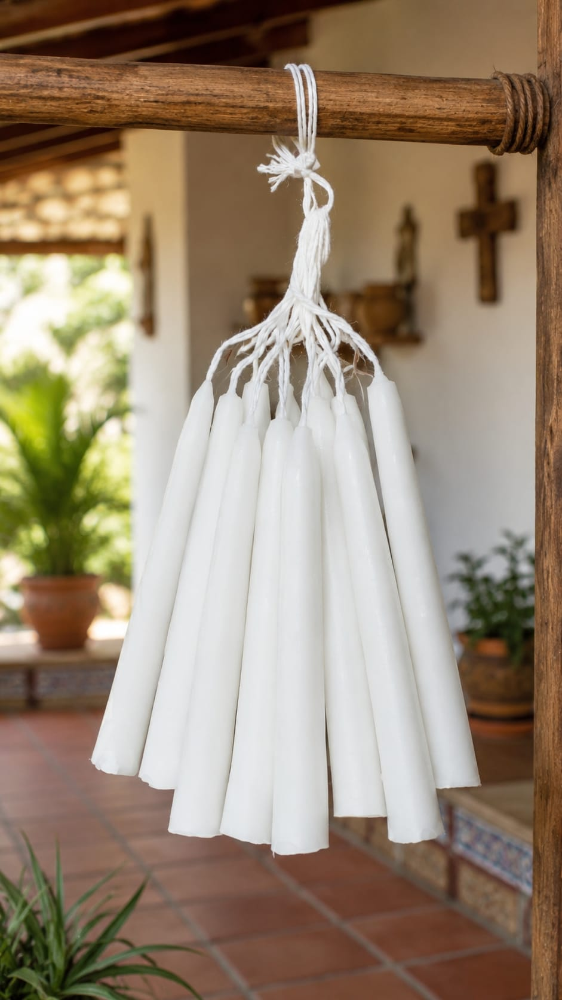
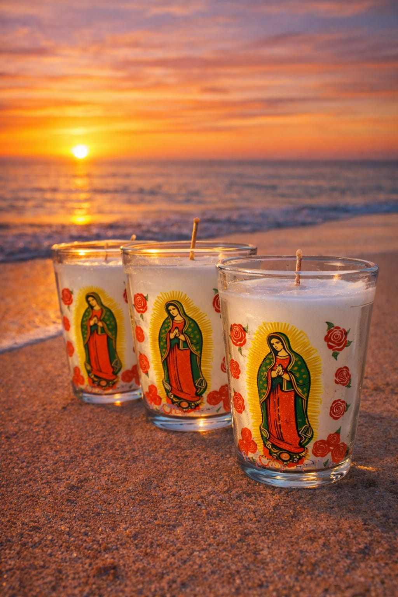
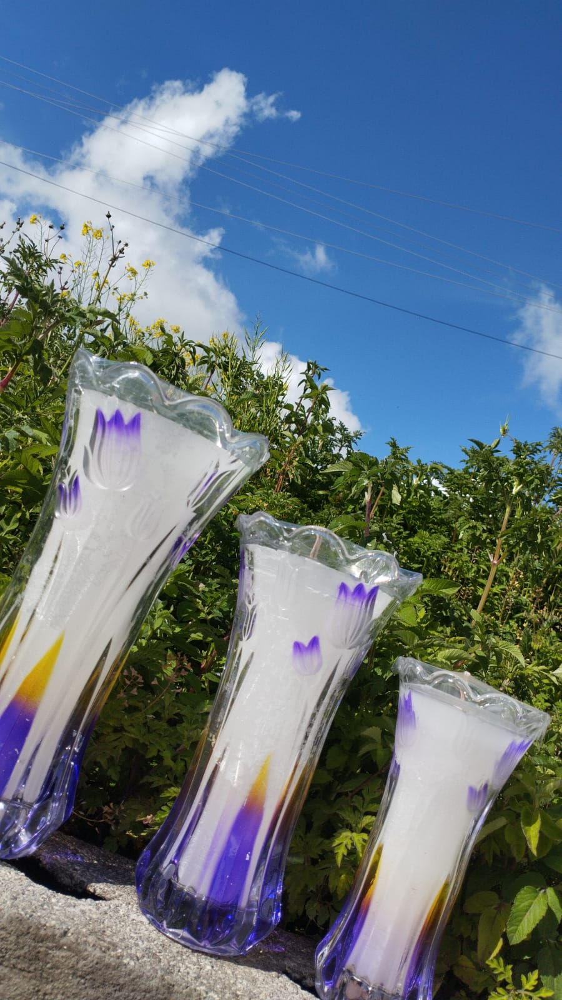
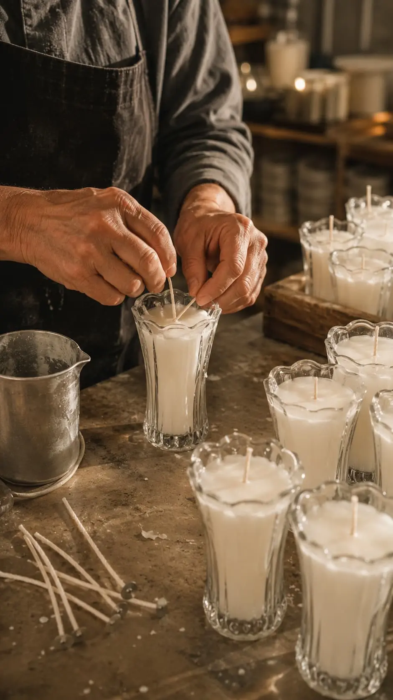

CANDELAS Y VELADORAS
Una luz diseñada
para cada momento
Fabricamos y comercializamos candelas y veladoras para diferentes ocasiones, necesidades y tradiciones.
Venta al por mayor y menor con envíos gratis a comunidades cercanas

CONOCE LO QUE FABRICAMOS
Nuestros productos
Fabricamos candelas y veladoras en diferentes presentaciones para distintas ocasiones, necesidades y tradiciones.

Candelas tradicionales
Candelas elaboradas para el hogar, celebraciones y diferentes ocasiones.

Veladoras religiosas
Diferentes presentaciones con imágenes religiosas para momentos de fe y oración.

Veladoras decorativas
Presentaciones en recipientes de vidrio de diferentes tamaños y diseños.
SOBRE SAN JOSÉ
Fabricamos con dedicación cada uno de nuestros productos
San José es un negocio familiar dedicado a la fabricación y comercialización de candelas y veladoras en diferentes presentaciones.
Elaboramos productos para diferentes ocasiones, necesidades y tradiciones, ofreciendo ventas al por mayor y menor.

CONTACTO
¿Necesitas candelas o veladoras?
Contáctanos para consultar nuestros productos, presentaciones y pedidos al por mayor y menor.
Escríbenos para consultar productos, disponibilidad y realizar pedidos.
Escribir por WhatsApp